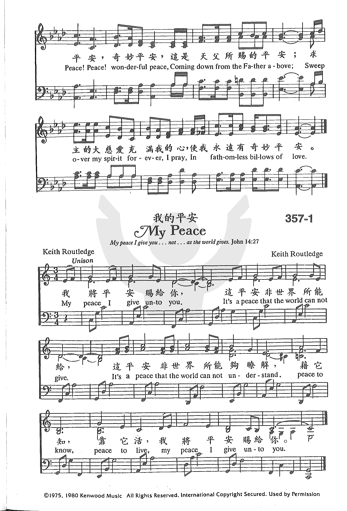

1179 Wonderful Peace _Cornell
奇妙平安
|
|
|
1 Far away in the depths of my
spirit tonight
Rolls a melody sweeter than psalm;
In celestial-like strains it unceasingly falls
O’er my soul like an infinite calm.
Refrain:
Peace, peace! wonderful peace,
Coming down from the Father above,
Sweep over my spirit forever, I pray,
In fathomless billows of love.
2 What a treasure I have in this wonderful peace
Buried deep in the heart of my soul,
So secure that no power can mine it away
While the years of eternity roll. [Refrain]
3 I am resting tonight in this wonderful peace,
Resting sweetly in Jesus’ control,
For I’m kept from all danger by night and by day,
And His glory is flooding my soul. [Refrain]
4 And me thinks when I rise to that city of peace
Where the Author of peace I shall see,
That one strain of the song which the ransomed will sing
In that heavenly kingdom shall be: [Refrain]
5 Ah! soul, are you here without comfort and rest,
Marching down the rough pathway of time?
Make Jesus your friend ere the shadows grow dark
O accept this sweet peace so sublime! [Refrain]
Source: The New National Baptist Hymnal (21st Century Edition) #403
|
在我心靈的最深處有一泉源，
不斷湧出美妙的音樂，
比那甜蜜的詩歌曲調更甘甜，
使我靈得平安和喜悅，
平安，奇妙平安，
這是天父所賜的平安，
求主的大慈愛充滿我的心，
使我永遠有奇妙平安。
何等寶貴我有這奇妙的平安，
深藏在我心靈的深處，
雖有惡勢力亦無法將它奪去，
因救主永遠與我同住，
我今安穩的享受這奇妙平安，
有耶穌在掌管我生命，
一切災害危險救主晝夜保護，
主的榮光充滿我心靈，
我深信將來我必到那平安城，
我與賜平安的主見面，
在榮耀的天上與眾聖徒同唱，
奇妙平安歌直到永遠，
|


http://sooopu.com/html/301/301269.html
 |
| |
|
http://www.hymncompanions.org/Sep/28/stream.php
在我心靈的最深處有一泉源，不斷湧出美妙的音樂；
比那甜美的詩歌曲調更甘甜，使我靈得平安和喜悅。
何等寶貴我有這奇妙的平安，深藏在我心靈的深處；
雖有惡勢力亦無法將它奪去，因救主永遠與我同住。
我今安穩的享受這奇妙平安，有耶穌在掌管我生命；
一切災害危險救主晝夜保護，主的榮光充滿我心靈。
我深信將來我必到那平安城，我與賜平安的主見面；
在榮耀的天上與眾聖徒同唱，奇妙平安歌直到永遠。
請問你心靈是否困倦與煩惱？是否覺人生道路難走？
當黑雲滿佈快來就近主耶穌，祂必賜平安作你良友。
（副歌）
平安，奇妙平安，這是天父所賜的平安；
求主的大慈愛充滿我的心，
使我永遠有奇妙平安。
 (請點耳機收聽)
(請點耳機收聽)
這首詩作者康乃爾（W. D.．Cornell）和

譜曲的郭伯（W. G. Cooper）都生於十九世紀。 他們的生平不詳。
 William G. Cooper (1861–1938)
William G. Cooper (1861–1938)
這是一首心靈平安的歌，莊嚴安詳。 父神所賜的平安，使我們心滿足，沒有懼怕。
1889年8月，康乃爾主領他教區衛理公會的露營佈道會。 與會者都感到聖靈在營地動工。
康乃爾是佈道家也是詩人，他講道有力，措詞優美，富有詩意，字句從他口中流出，宛如潺潺清溪，沁人心脾。
有一天康乃爾在帳棚中沉思默想，把他心中的思緒寫在一紙上。 當他離開時，不意紙掉在地上。
兩小時後，郭伯走入帳棚，隨手拾起地上的紙，詩的標題和詞句深深吸引了他，閱後深有同感，就坐到風琴旁作曲。
神使他的兩個僕人在不經意中，完成了這首沉浸在神聖安靜中的美麗詩歌。 它也是那次露營佈道會的果實。
約翰福音14：27「我留下平安給你們，我將我的平安賜給你們。 我所賜的，
不像世人所賜的。 你們心裡不要憂愁，也不要膽怯。」
腓力比書4：7「神所賜出人意外的平安，必在基督耶穌裡，保守你們的
心懷意念。」
中英文聖詩集參考
英文歌名 Wonderful
Peace
教會聖詩 357
新聖詩 171
歡欣讚美 743
聖詩 329
讚美 293
青年聖歌II 51
https://hymnary.org/person/Cornell_WD1
Short Name: W. D. Cornell
Full Name: Cornell, W. D. (Warren Donald), 1858-1936
Birth Year: 1858
Death Year: 1936
Rv Warren Donald Cornell USA 1858-1936. Born in Whiteford, MI, he trained as a
school teacher and began teaching in Dallas Public Schools at age 19. Licensed
by the Southern Methodist conference in 1879, he was appointed to preach in
Denton and Gainesville, TX, for a year in each place. He married Jennie Estelle
Roberts in 1880, and they five sons: Warren, Louis, William, Robert, and Donald,
and a daughter, Florence. In 1881 he removed to the Oshkosh, WI, area and spent
most of his career preaching at various pastorates and in Berlin, WI. He was an
eloquent precher, poet, and evangelist. In 1894 he became minister of the
People's Christian Assn., in Fond du Lac, WI. The group met for 10 years and
disbanded. Cornell pastored an independent church there. In 1905, after
pastoring, he entered real estate. He took an interest in political and social
issues, and became secretary of the Paving Cutter's Union, and leader of the
'Anti-Tramp Society”. He became a lecturer, and a founding member of the
anti-socialist Constitutional Defense League, spending much of his time in this
cause. He was no longer a member of clergy, but a touring lecturer for several
years. By 1925 he and his family had moved to NY state, where he eventually
died. He was buried in Fond du Lac, WI.
John Perry
https://wordwisehymns.com/2015/09/25/wonderful-peace-cornell/
Words: Warren Donald Cornell (b. Apr. 25, 1858; d. some time after 1920)
Music: William Gustin Cooper (b. July 15, 1861; d. Oct. 17, 1938)
Links:
Wordwise Hymns
The Cyber Hymnal
Hymnary.org
Note: As a young man, Cornell was a school teacher. But he’s identified in the
1880 census as a minister of the gospel, and he served a number of congregations
as pastor. The hymn was written in 1889. Originally, in CH-4, the song called
the Lord the “Author” of peace, rather than the Anchor. Both are true.
Anumber of topics are often in the news. One is the economy. People are worried
about whether they’ll be able to keep paying the rent, and put food on the
table. Another common subject is terrorism, and the threat posed by conflicts in
various places around the globe. Stated another way, the latter concerns a
search for peace. Read the newspaper, or watch the news on television, and peace
is discussed repeatedly as something that’s desired, but too often lacking. The
subject keeps coming up.
The Scriptures deal with the spiritual dimensions of peace hundreds of times.
Fifty-eight of the sixty-six books of the Bible have something to say about
peace. And dozens of our hymns make reference to it as well. If you are a
regular reader of this column, you may know that there is more than one hymn
with the title of today’s selection, Wonderful Peace. (See the blog for
September 23, 2015.)
Why is it such a frequent theme in the spiritual realm, as well as in the
secular world? Again, it’s because peace is something we want, and so often
don’t have. Augustine said, long ago: “Thou hast made us for thyself, O Lord,
and our heart is restless until it finds its rest in Thee.” Without God, the
heart is an empty well, and all of life is out of joint.
Attempts are made, of course, to find a substitute. Money and possessions,
pleasures–licit and illicit, a relentless climb to new heights of power and
success, none can take the Lord’s place. Even friendship’s bonds, warm and
wonderful in themselves, cannot do what God can do. He has put eternity in the
hearts of men (Ecc. 3:11). Unlike the animals, we have an eternal spirit, and a
capacity to have a relationship with the eternal God. This begins with the new
birth.
But it would be naive and short-sighted to claim that no Christian has a
struggle to maintain inner peace. Through personal faith in Christ, we gain
peace with God (Rom. 5:1). But we maintain inner serenity and live peacefully
only through an ongoing walk of faith that commits life’s challenges and
obstacles to Him in prayer (Phil. 4:6-7), and claims His daily grace (Heb.
4:15-16). Author George Sanville wrote that “peace is frictionless motion.” Too
many of us find instead that we’re regularly, and painfully, scraped and scoured
by life’s troubles.
The present song called Wonderful Peace was written by Warren Cornell, who was
born in Michigan in 1858. Cornell was a pastor, an evangelist, an eloquent
preacher, and a poet. But the creation of this hymn involved another pastor as
well.
Rev. William Cooper (1861-1938) was conducting camp meetings in Wisconsin, in
1889. It was a time of special blessing for all in attendance. Among those
gathered was Warren Cornell, who one day remained sitting in the large tent used
for the meetings, after others had gone. Following a period of meditation, he
jotted down some lines describing the peace of God in the heart of the believer.
Leaving the tent afterward, he didn’t realize that he’d dropped the paper on
which he’d written his thoughts.
Pastor Cooper entered the tent an hour or two later and spotted that piece of
paper. He picked it up, likely in the process of tidying the tent for the next
service. But he was fascinated by what he saw written there. It was the rough
beginnings of a poem. He not only sat down and completed the lines of verse, he
went to the organ and wrote a tune for them. That is how Cornell’s Wonderful
Peace came to be. It says:
CH-1) Far away in the depths of my spirit tonight
Rolls a melody sweeter than psalm;
In celestial-like strains it unceasingly falls
O’er my soul like an infinite calm.
Peace, peace, wonderful peace,
Coming down from the Father above!
Sweep over my spirit forever, I pray
In fathomless billows of love!
CH-2) What a treasure I have in this wonderful peace,
Buried deep in the heart of my soul,
So secure that no power can mine it away,
While the years of eternity roll!
CH-4) And I think when I rise to that city of peace,
Where the Anchor of peace I shall see,
That one strain of the song which the ransomed will sing
In that heavenly kingdom will be:
Questions:
1) Regarding the word change in CH-4, what is the difference between Christ
being the Author of our peace and the Anchor of it?
2) What would you tell a Christian who seemed to lack God’s peace to help him
gain it?
https://hymnstudiesblog.wordpress.com/2009/05/05/quotpeace-peace-wonderful-peacequot/
"PEACE, PEACE, WONDERFUL PEACE"
"These things I have spoken unto you, that in Me ye might have peace…" (Jn.
16.33)
INTRO.:
song which talks about the peace that we can have in Christ through the things
that He has spoken to us is "Peace, Peace, Wonderful Peace" (#572 in Hymns
for Worship Revised, #467 in Sacred
Selections for the Church). The text was written and the tune (Lillenas
or Sweet Peace) was composed both by Haldor Lillenas (1885-1959). Born in
Norway of Lutheran parents who immigrated to the United States when he was an
infnat, he attended Deets Pacific Bible College in Los Angeles, CA (later
Pasadena College) where he met and married Bertha Mae Wilson. Becoming a
Nazarene minister, he founded the Lillenas Music Co. at Indianapolis, IN, in
1924. It was purchased by the Nazarene Music Company of Kansas City, IN, in
1930, and he stayed on as music editor. Perhaps his best known gospel song is
"Wonderful Grace of Jesus."
There are several copyright dates given for "Peace, Peace, Wonderful
Peace." The original version was first published in 1914, with the copyright
owned by Charles Reign Scoville. Later, it was owned by Standard Publishing
Co. beginning in 1923. However, several books give the same version the
copyright date of 1924 by the Lillenas Publishing Co. with a renewal date of
1952. However, both Hymns
for Worship and Sacred
Selections have a "new arrangement" copyright in 1929 by Lillenas
Publishing Co., that would have been renewed in 1957 (although Hymns
for Worship uses the 1923 date with a renewal of 1950). I think that the
difference in dates results from the fact that Lillenas did not own the
original copyright to his own song, tried to claim it when he founded his own
publishing company, and then later had to make a "new arrangement."
Among hymnbooks published by members of the Lord’s church during the
twentieth century for use in churches of Christ, the song (original version)
appeared in the 1935 Christian
Hymns (No. 1) edited by L. O. Sanderson. Today, the only two of our books
in which I know that the song can be found are Hymns
for Worship and Sacred
Selections. It apparently used to be a very popular song. In hymnbooks of
my collection it was used in the Wonder
Hymns of Faith and the 1953 Favorite
Hymns Revised both published by the Standard Publishing Co.; the 1961 Inspiring
Hymns published by Singspiration Music/Zondervan Corp.; the 1972 Favorite
Hymns of Praise published by Tabernacle Publishing Co.; the 1976 New
Church Hymnal published by Lexicon Music Inc.; the Praise
and Worship Hymnal, the 1972 Worship
in Song Hymnal, and the 1993 Sing
to the Lord Hymnal all published by the Lillenas Publishing Co.
The song encourages us to seek the peace that God offers us in Christ.
I. Stanza 1 identifies the source of this peace
"Coming to Jesus, my Savior, I found Wonderful peace, wonderful peace;
Storms in their fury may rage all around, I have peace, sweet peace."
A. Jesus wants us to come to Him: Matt. 11.28-30
B. The reason that He wants us to come to Him is that He is the Savior: Lk.
2.11
C. Storms raging in their fury all around represent the trials and
tribulations of life, but those who come to Jesus are promised that He will
give us peace: Jn. 14.27
II. Stanza 2 identifies the place of this peace
"Peace like a river, so deep and so broad, Wonderful peace, wonderful peace;
Resting my soul on the bosom of God, I have peace, sweet peace."
A. The peace of God through Christ is like a river that flows calmly and
smoothly: Isa. 66.12
B. It is deep and broad because it comes from God Himself who can sanctify us
wholly: 1 Thess. 5.22
C. However, to receive it, we must rest our souls on the bosom of God
spiritually, in like manner as the apostle John leaned on Jesus’s bosom
literally, by committing our souls unto the Lord: Jn. 13.23, 2 Tim. 1.12
III. Stanza 3 identifies the nature of this peace
"Peace like a holy and infinite calm, Wonderful peace, wonderful peace,
Like to the strains of an evening psalm, I have peace, sweet peace."]
A. The peace that we have in Christ is the result of knowing that we are
striving to live a holy life: 1 Pet. 1.15-16
B. It produces an infinite calm, because it comes as we make our requests
known to God and thus eliminate anxiety from our hearts: Phil. 4.6-7 (One
might assume that Lillenas may have been influenced, even if unconsciously, by
an earlier hymn entitled "Wonderful Peace," in which George Cooper wrote, "In
celestial strains it unceasingly falls O’er my soul like an infinite calm.")
C. Such peace is like the strains of an evening psalm when God gives His
beloved peaceful sleep: Ps. 127.2
IV. Stanza 4 identifies the results of this peace
"Gone is the battle that once raged within, Wonderful peace, wonderful peace;
Jesus has saved me and cleansed me from sin, I have peace, sweet peace."
A. "The battle" here is not the constant battle with temptation that all
Christians continue to experience until we depart this life, but the battle or
struggle of the sinful soul against the ways of the Lord as pictured by Paul:
Rom. 7.14-24
B. This battle is now gone for all who come to the Lord in obedience to His
word because there is now no condemnation to those who are in Christ Jesus:
Rom. 8.1-2
C. The reason is that Jesus has saved them and cleansed them from their sin:
Tit. 3.5
CONCL .:
The chorus concludes with the benefits of the peace that our Redeemer offers
us through His sacrifice.
"Peace, peace, wonderful peace, Peace, peace, glorious peace;
Since my Redeemer has ransomed my soul, I have peace, sweet peace."
We live in a world that is cursed by sin, and therefore all people have
various trials and tribulations in life with which they must deal, whether it
be sickness, the loss of loved ones, financial difficulties, family problems,
accidents, and approaching death, in addition to the guilt of sin for those
who are outside of Christ. Christians must suffer these same sources of
sadness and sorrow, because the Lord has never promised to take all our
temptations away. However, everyone–both saint and sinner alike–need to know
that if we will submit ourselves to the Lord, we can find in Him "Peace,
Peace, Wonderful Peace."
https://aocinternational.org/wonderful-peace-a-hymn-devotion-for-17-april-2018-anno-domini/
for 17 April 2018 Anno Domini
“The LORD will give strength unto his people; the LORD will bless his
people with peace.”
(Psalms 29:11; all scripture quoted is from the King James Version)
“Peace I leave with you, my peace I give unto you: not as the world giveth,
give I unto you. Let not your heart be troubled, neither let it be
afraid.” (John 14:27)
WONDERFUL PEACE is a hymn that is more characteristic of soulful
meditation than of communal worship. Lyrics were written by Warren D.
Cornell in 1889 and the musical score, by same title, was written
specifically for the hymn during the same year of 1889. The hymn is not
included in the 1940 Hymnal perhaps for its tone of solitude rather than
of public worship; but the hymn evokes deep spiritual emotion and a
drawing of the soul into the deep and silent waters of the Holy Spirit.
The hymn was first sung at a Methodist Camp meeting in West Bend,
Wisconsin.
WONDERFUL PEACE
Far away in the depths of my spirit tonight
Rolls a melody sweeter than psalm;
In celestial strains it unceasingly falls
O’er my soul like an infinite calm.
Refrain
Peace, peace, wonderful peace,
Coming down from the Father above!
Sweep over my spirit forever, I pray
In fathomless billows of love!
What a treasure I have in this wonderful peace,
Buried deep in the heart of my soul,
So secure that no power can mine it away,
While the years of eternity roll!
Refrain
I am resting tonight in this wonderful peace,
Resting sweetly in Jesus’ control;
For I’m kept from all danger by night and by day,
And His glory is flooding my soul!
Refrain
And I think when I rise to that city of peace,
Where the Anchor of peace I shall see,
That one strain of the song which the ransomed will sing
In that heavenly kingdom will be:
Refrain
Ah, soul! are you here without comfort and rest,
Marching down the rough pathway of time?
Make Jesus your Friend ere the shadows grow dark;
O accept of this peace so sublime!
Refrain
“Far away in the depths of my spirit tonight Rolls a melody sweeter than
psalm; In celestial strains it unceasingly falls O’er my soul like an
infinite calm.” When we are fully submerged in the Spirit, we are absent
from the world and present with the Lord as Paul says. That is a
tremendous distance from the world to the place of God in the Spirit. The
only way to fully taste the delectable flavors of the spirit is to become
fully submerged therein. The depths of the spirit that is devoted to God
cannot be fathomed. The beauty of this melody of the Spirit is that it
transcends words – even Psalms since it is simply the words of the
Psalmist set to music. Like a blanket of golden fleece, the Spirit of God
often covers us with gentle love and sweet caresses and speaks to our
soul, “Be Still and Know!”
“What a treasure I have in this wonderful peace, Buried deep in the heart
of my soul, So secure that no power can mine it away, While the years of
eternity roll!” The depths of our converted spirits is safely ensconced in
the heart of God – a secure resting place indeed. Now, it is quite logical
that if our heart is in Christ, that we are in possession of our great
treasures which are on deposit in Heaven. No evil can enter even the most
remote perimeters of the Spirit. Only those things pleasing to God will be
found there. The deep into which our spirits rest in Christ has no limit,
and is more secure than any known safe. In his Christmas message to the
English people in 1939 as the specter of world war lay before the nation,
King George VI quoted from Minnie Haskins poem, The Gate of the Year,
thusly: “I said to the man who stood at the Gate of the Year,‘Give me a
light that I may tread safely into the unknown.’ And he replied, ‘Go out
into the darkness, and put your hand into the Hand of God. That shall be
better than light, and safer than a known way.’”
“I am resting tonight in this wonderful peace, Resting sweetly in Jesus’
control; For I’m kept from all danger by night and by day, And His glory
is flooding my soul!” There is no sweeter rest than that which resides in
a heart of Jesus. “Come unto me, all ye that labour and are heavy laden,
and I will give you rest.” (Matthew 11:28) The Godly soul works during the
daylight hours, and sleeps during the hours of darkness. It is during
those moments that the Lord keeps a particular watch of protection over
us. “I must work the works of him that sent me, while it is day: the night
cometh, when no man can work.” (John 9:4) There is no danger in sleep when
the night is pitch black, but there is danger in carousing about the
streets in a drunken stupor when one should be home sleeping with his
family. There are moments for the Christian when the vessel of his soul
cannot contain the joy and glory of the Lord’s fellowship. In a manner of
speaking, we were “beside ourselves” as Mark tells us of Jesus. It is
better to be beside Jesus, and without ourselves, than the other way
around, friends.
“And I think when I rise to that city of peace, Where the Anchor of peace
I shall see, That one strain of the song which the ransomed will sing In
that heavenly kingdom will be:” I am reminded of the hope and faith we
have in the power unseen which shall be realized in broad sight at the
Last Day. “Which hope we have as an anchor of the soul, both sure and
stedfast, and which entereth into that within the veil.” (Hebrews 6:19)
Were you ever ransomed? Was your soul ever before held hostage by the
power of sin and the devil? Yes, most certainly; and the Lord Jesus Christ
redeemed the hostage and set you free. If you think the Choir of St.
Paul’s Cathedral sings beautifully, just wait until your ears are graced
with the glorious singing of the angels!
“Ah, soul! are you here without comfort and rest, Marching down the rough
pathway of time? Make Jesus your Friend ere the shadows grow dark; O
accept of this peace so sublime!” Make sure that your pathway is the
pathway of our Lord for He is the Way, the Truth, and the Life. The
pathway to the abyss is not always strewn with stones. It may not be so
rough, and it leads always DOWN! Instead of stones and debri, it may be
strewn with fleshly delights that ruin the soul. But if our Lord is our
Friend, Brother, and Savior, we need not worry about the Broad Way that
leads to destruction; because traveling with Him, His feet will never
tread that path. In this life, the shadows invariably lengthen as we
approach the sunset of life. But in Christ, those shadows are merely
variances of the beams of light that emanate from Heaven. Shadows have no
force or substance. That is why we can say, “Yea, though I walk through
the valley of the shadow of death, I will fear no evil: for thou art with
me; thy rod and thy staff they comfort me.” (Psalm 23:4) To the redeemed
in Christ, death is only a shadow without power or substance.
REFRAIN:
“Peace, peace, wonderful peace, Coming down from the Father above! Sweep
over my spirit forever, I pray In fathomless billows of love!” Just as the
unseen dews condense to form visible droplets on the morning rose, so
shall the peace of God gently surround His favored Child.
The
Manna of God will be formed in that “peace that passeth all
understanding.” The persistent tides sweep the sands of the ocean seas,
but never cease in their waxing and waning. But the tides of God’s peace
never wane, but grow with steady intensity as the soul is drawn into the
deep of His Love which is bottomless. As we have sung that glorious old
verse of the Love of God: “Could we with ink the ocean fill, And were the
skies of parchment made, Were every stalk on earth a quill, And every man
a scribe by trade; To write the love of God above Would drain the ocean
dry;
Nor could the scroll contain the whole, Though stretched from sky to sky.”
Rest in Peace, friends.
https://wordwisehymns.com/2015/09/25/wonderful-peace-cornell/
Words: Warren Donald Cornell (b. Apr. 25, 1858; d. some time after 1920)
Music: William Gustin Cooper (b. July 15, 1861; d. Oct. 17, 1938)
Links:
Wordwise Hymns
The Cyber Hymnal
Hymnary.org
Note: As a young man, Cornell was a school teacher. But he’s identified in
the 1880 census as a minister of the gospel, and he served a number of
congregations as pastor. The hymn was written in 1889. Originally, in CH-4,
the song called the Lord the “Author” of peace, rather than the Anchor. Both
are true.
Anumber of topics are often in the news. One is the economy. People are
worried about whether they’ll be able to keep paying the rent, and put food
on the table. Another common subject is terrorism, and the threat posed by
conflicts in various places around the globe. Stated another way, the latter
concerns a search for peace. Read the newspaper, or watch the news on
television, and peace is discussed repeatedly as something that’s desired,
but too often lacking. The subject keeps coming up.
The Scriptures deal with the spiritual dimensions of peace hundreds of
times. Fifty-eight of the sixty-six books of the Bible have something to say
about peace. And dozens of our hymns make reference to it as well. If you
are a regular reader of this column, you may know that there is more than
one hymn with the title of today’s selection, Wonderful Peace. (See the blog
for September 23, 2015.)
Why is it such a frequent theme in the spiritual realm, as well as in the
secular world? Again, it’s because peace is something we want, and so often
don’t have. Augustine said, long ago: “Thou hast made us for thyself, O
Lord, and our heart is restless until it finds its rest in Thee.” Without
God, the heart is an empty well, and all of life is out of joint.
Attempts are made, of course, to find a substitute. Money and possessions,
pleasures–licit and illicit, a relentless climb to new heights of power and
success, none can take the Lord’s place. Even friendship’s bonds, warm and
wonderful in themselves, cannot do what God can do. He has put eternity in
the hearts of men (Ecc. 3:11). Unlike the animals, we have an eternal
spirit, and a capacity to have a relationship with the eternal God. This
begins with the new birth.
But it would be naive and short-sighted to claim that no Christian has a
struggle to maintain inner peace. Through personal faith in Christ, we gain
peace with God (Rom. 5:1). But we maintain inner serenity and live
peacefully only through an ongoing walk of faith that commits life’s
challenges and obstacles to Him in prayer (Phil. 4:6-7), and claims His
daily grace (Heb. 4:15-16). Author George Sanville wrote that “peace is
frictionless motion.” Too many of us find instead that we’re regularly, and
painfully, scraped and scoured by life’s troubles.
The present song called Wonderful Peace was written by Warren Cornell, who
was born in Michigan in 1858. Cornell was a pastor, an evangelist, an
eloquent preacher, and a poet. But the creation of this hymn involved
another pastor as well.
Rev. William Cooper (1861-1938) was conducting camp meetings in Wisconsin,
in 1889. It was a time of special blessing for all in attendance. Among
those gathered was Warren Cornell, who one day remained sitting in the large
tent used for the meetings, after others had gone. Following a period of
meditation, he jotted down some lines describing the peace of God in the
heart of the believer. Leaving the tent afterward, he didn’t realize that
he’d dropped the paper on which he’d written his thoughts.
Pastor Cooper entered the tent an hour or two later and spotted that piece
of paper. He picked it up, likely in the process of tidying the tent for the
next service. But he was fascinated by what he saw written there. It was the
rough beginnings of a poem. He not only sat down and completed the lines of
verse, he went to the organ and wrote a tune for them. That is how Cornell’s
Wonderful Peace came to be. It says:
CH-1) Far away in the depths of my spirit tonight
Rolls a melody sweeter than psalm;
In celestial-like strains it unceasingly falls
O’er my soul like an infinite calm.
Peace, peace, wonderful peace,
Coming down from the Father above!
Sweep over my spirit forever, I pray
In fathomless billows of love!
CH-2) What a treasure I have in this wonderful peace,
Buried deep in the heart of my soul,
So secure that no power can mine it away,
While the years of eternity roll!
CH-4) And I think when I rise to that city of peace,
Where the Anchor of peace I shall see,
That one strain of the song which the ransomed will sing
In that heavenly kingdom will be:
Questions:
1) Regarding the word change in CH-4, what is the difference between Christ
being the Author of our peace and the Anchor of it?
2) What would you tell a Christian who seemed to lack God’s peace to help
him gain it?
Links:
Wordwise Hymns
The Cyber Hymnal
Hymnary.org